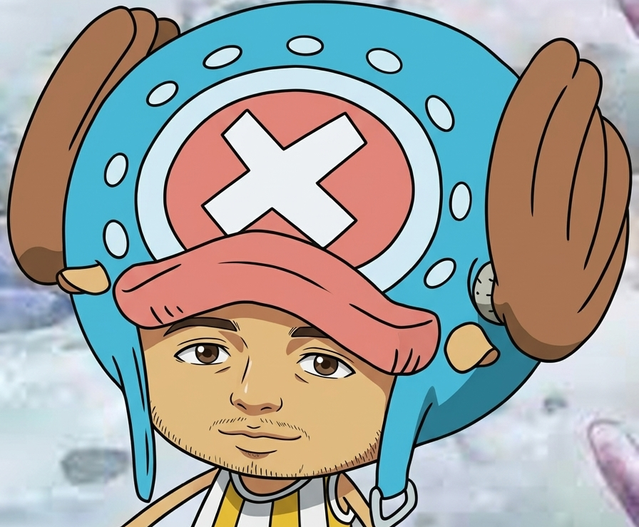

Mi primera entrada en la red
Hoy oficialmente inicio mi sitio web. Estar construyendo esto con código HTML y CSS me da control total sobre cómo quiero presentar mis notas sin depender de redes sociales tradicionales.

> Todos están conectados. Bienvenido a mi espacio personal.
> AUDIO_SYSTEM // PLAYER_v2.0

¡Hola! Este es mi blog personal con estética retro cyber/Wired.
Aquí escribiré sobre mis proyectos, ideas, videojuegos y desarrollo. No importa a dónde vayas, siempre hay una conexión.
Hoy oficialmente inicio mi sitio web. Estar construyendo esto con código HTML y CSS me da control total sobre cómo quiero presentar mis notas sin depender de redes sociales tradicionales.
Las páginas de Geocities y los sitios inspirados en anime tenían personalidad propia: barras de sonido, contadores de visitas, marcos de ventanas y colores neón sobre fondos oscuros.
Que más podria poner.
Capturas, arte y referencias visuales:
Conéctate conmigo en la Wired o envíame un paquete de datos:
"No matter where you go, everyone's connected."
— Serial Experiments Lain